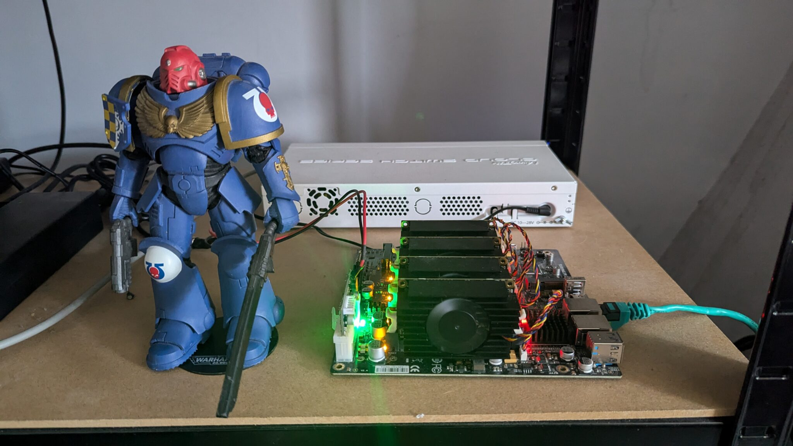
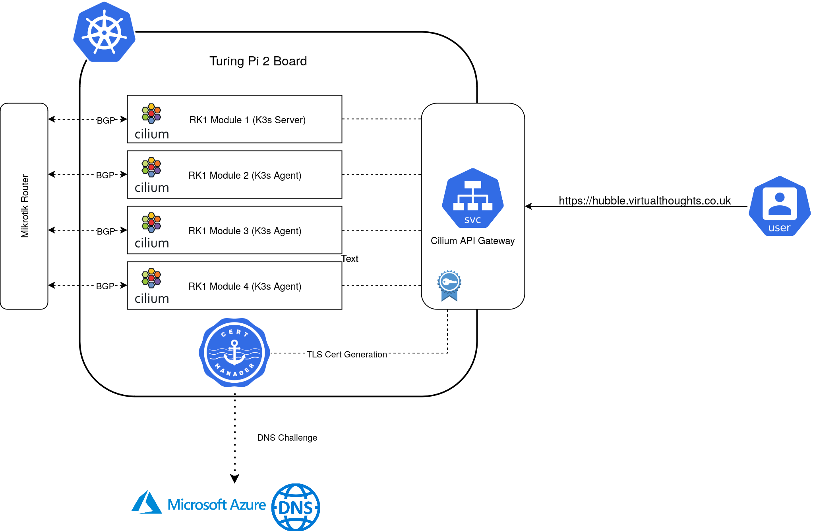
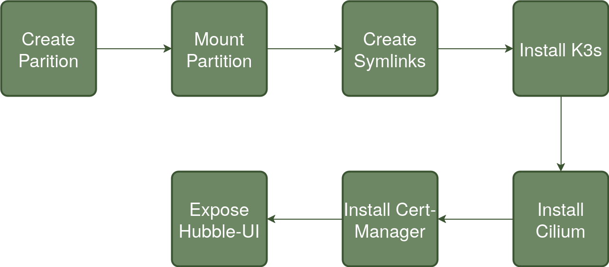
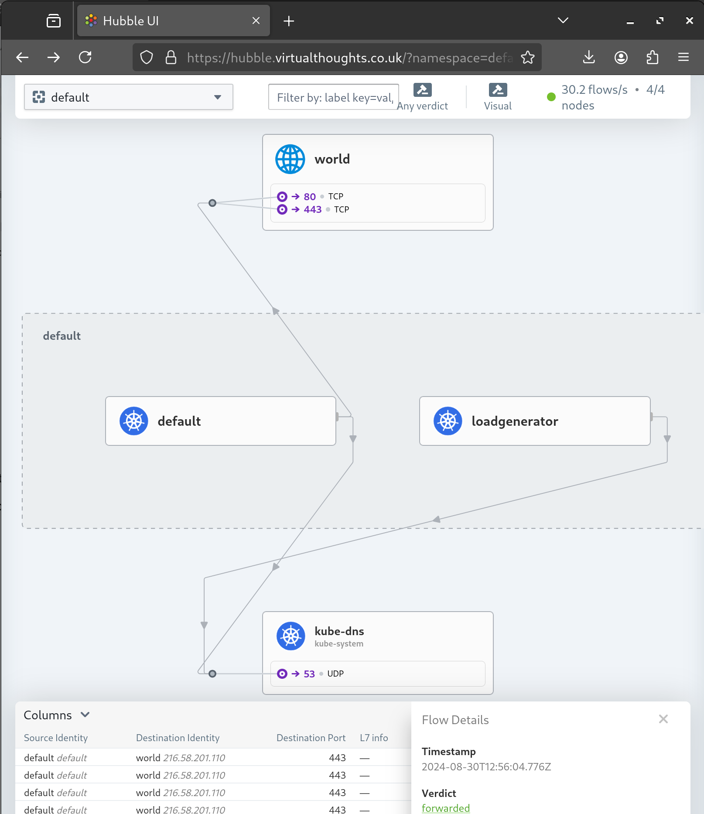
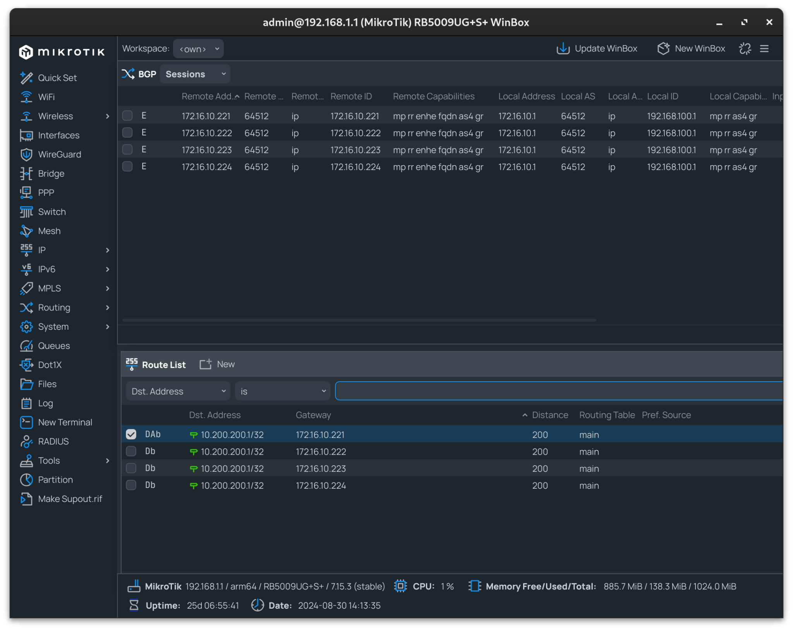

Kubernetes on RK1 / Turing Pi 2: Automation with Ansible, Cilium and Cert-Manager
Note - This is just a high-level overview, I’ll likely follow up with a post dedicated on the CIlium/BGP configuration.

I’ve had my Turing Pi 2 board for a while now, and during that time I’ve struggled to decide which automation tooling to use to bootstrap K3s to it. However, I reached a decision to use Ansible. It’s not something I’m overly familiar with, but this would provide a good opportunity to learn by doing.
The idea is pretty straightforward:

Each RK1 module is fairly well equipped:
-
32GB Ram
-
8 Core CPU
-
512GB NVME SSD
-
Pre-Installed with Ubuntu
Mikrotik Config
Prior to standing up the cluster, the Mikrotik router can be pre-configured to peer with each of the RK1 Nodes, as I did:
routing/bgp/connection/ add address-families=ip as=64512 disabled=no local.role=ibgp name=srv-rk1-01 output.default-originate=always remote.address=172.16.10.221 routing-table=main
routing/bgp/connection/ add address-families=ip as=64512 disabled=no local.role=ibgp name=srv-rk1-02 output.default-originate=always remote.address=172.16.10.222 routing-table=main
routing/bgp/connection/ add address-families=ip as=64512 disabled=no local.role=ibgp name=srv-rk1-03 output.default-originate=always remote.address=172.16.10.223 routing-table=main
routing/bgp/connection/ add address-families=ip as=64512 disabled=no local.role=ibgp name=srv-rk1-04 output.default-originate=always remote.address=172.16.10.224 routing-table=main
Workflow
The following represents an overview of the steps code repo

To summarise each step:
Create Partition
Each of my RK1 Modules has a dedicated 512GB NVME drive - This will be used for primary Kubernetes storage as well as container storage. The drive is presented as a raw block device and therefore needs partitioning before mounting.
Mount Partition
The created partition is mounted to /mnt/data and checked.
Create Symlinks
Three directories are primarily used by K3s/Containerd to store data. Symlinks are created so their contents effectively reside on the NVME drive. These are:
/run/k3s -> /mnt/data/k3s /var/lib/kubelet -> /mnt/data/k3s-kubelet /var/lib/rancher -> /mnt/data/k3s-rancher
Install K3s
To facilitate replacing both Kube-Proxy and the default CNI to Cilium’s equivalents, a number of flags are passed to the Server install script:
--flannel-backend=none
--disable-network-policy
--write-kubeconfig-mode 644
--disable servicelb
--token {{ k3s_token }}
--disable-cloud-controller
--disable local-storage
--disable-kube-proxy
--disable traefik
In addition, the GatewayAPI CRD’s are installed:
- name: Apply gateway API CRDs
kubernetes.core.k8s:
state: present
src: https://github.com/kubernetes-sigs/gateway-api/releases/download/v1.1.0/experimental-install.yaml
Install Cilium
Cilium is is customised with the following options enabled:
-
BGP Control Plane
-
Hubble (Relay and UI)
-
GatewayAPI
-
BGP configuration to Peer with my Mikrotik router
Install Cert-Manager
Cert-Manager facilitates certificate generation for exposed services. In my environment, the API Gateway is annotated in a way that Cert-Manager will automatically generate a TLS Certificate for, using DNS challenges to Azure DNS.
This also includes the required clusterIssuer resource that provides configuration and authentication details
Expose Hubble-UI
A gateway and httproute resource is created to expose the Hubble UI:

Mikrotik BGP Peering Check
Using Winbox, the BGP peering and route propagation can be checked:

In my instance, 10.200.200.1 resolves to my API Gateway IP, with each node advertising this address.